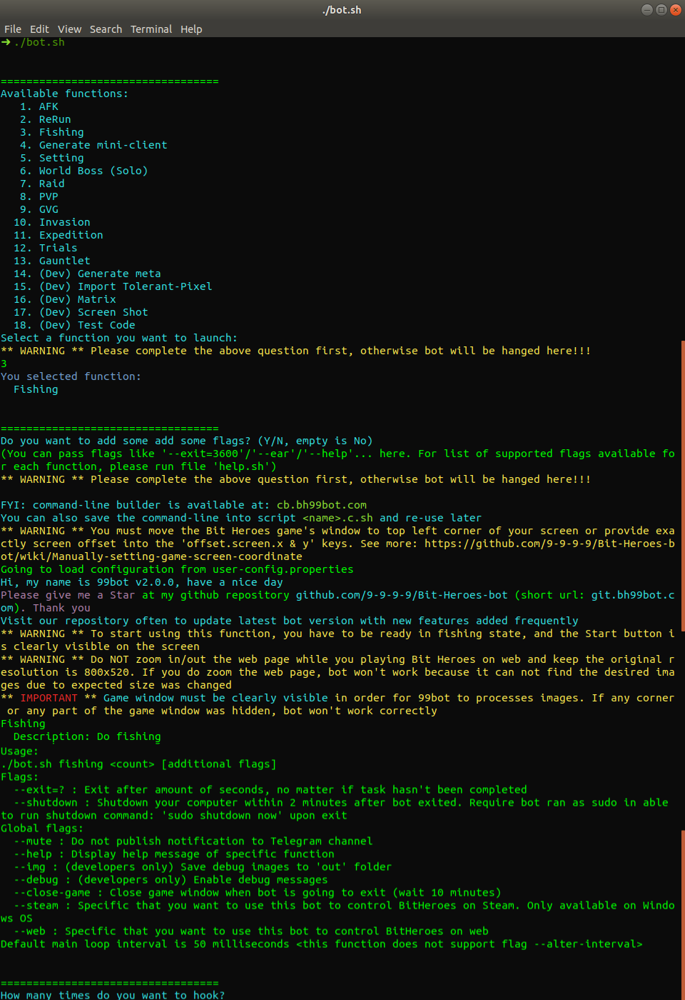

download.bh99bot.com
Prerequisite
-
Java 8 installed
- (Linux only) xdotool and xwininfo must be available
How to download Bit Heroes 99bot
- Download file Bit-Heroes-99bot-Release-vX.X.X.zip from my GitHub
repository
- Extract the ZIP file you have downloaded from previous step
and dont forget to give me a 
Upgrade notes: Move the following file and directory from previous bot version's directory
user-config.properties and readonly.*.user-config.properties files, it contains your configuration
Mini-client chrome-user-dir directory, that folder was created by chrome to do temp cache and also save your game's setting. By specify an external directory into the key external.mini-client.user.dir into the user-config.properties file, next time when you upgrade this bot, you don't need to move this folder
Now it's ready, run
Windows Steam steam.bot.bat
Windows Mini client Web web.bot.bat
Linux Mini client Web ./bot.sh
